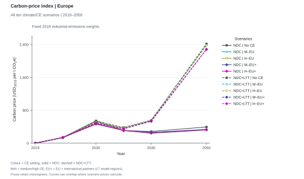
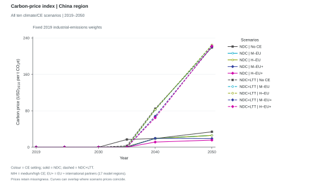
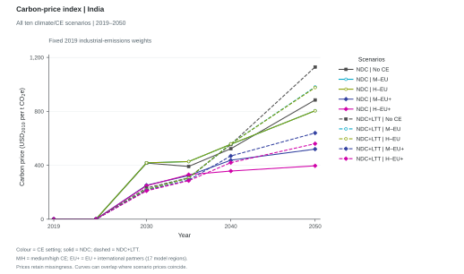
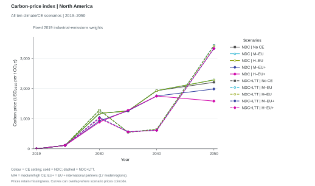
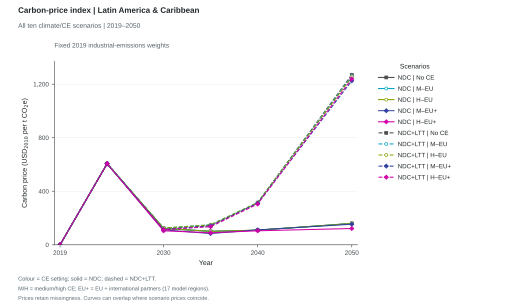
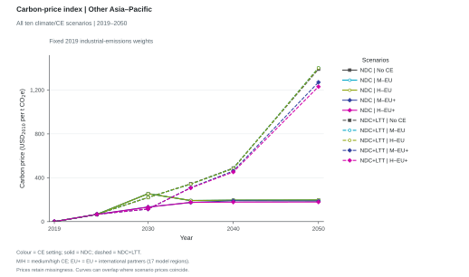
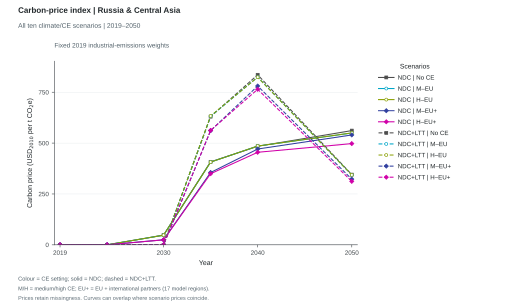
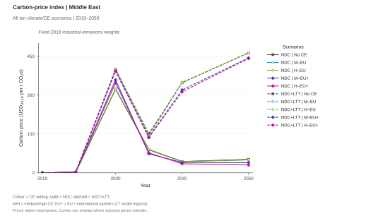
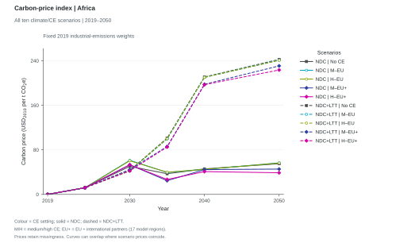

9 regional figures from results_allCE_261008.csv, each with all ten scenarios. Colours identify CE settings; solid lines show NDC and dashed lines NDC+LTT. Indices retain the reference figure's fixed 2019 industrial-emissions weighting.
How do carbon prices in Europe differ across climate and CE settings?

Carbon-price indices for Europe, comprising ENE, ENW, EUE, EUM, EUW, in all ten climate/CE scenarios from results_allCE_261008.csv. Each curve is the weighted mean of exact Price|Carbon [USD_2010/t CO2e] source prices. Weights use baseline_noce reported industrial GHG emissions in 2019, normalized within this group and held fixed across every scenario and year. Colours identify the five CE settings using the shared report palette; solid lines denote NDC (ndc_*) and dashed lines NDC+LTT (baseline_*). Squares denote no CE, open circles EU-only CE and filled diamonds EU-plus-partners CE. EU+ covers 17 participating model regions, rather than worldwide adoption. Prices are in constant 2010 USD per tonne CO2-equivalent. Source-year coordinates and signs are preserved; straight segments connect the supplied observations. Missing prices with positive weights yield gaps; zero-weight prices do not invalidate an index. Coincident curves are not displaced. Each region has its own linear price scale, including zero. Weights and raw regional contributions are exported alongside the figure data.
Figure 2
Carbon-price index | China region
How do carbon prices in China region differ across climate and CE settings?

Carbon-price indices for China region, comprising CHN, in all ten climate/CE scenarios from results_allCE_261008.csv. Each curve is the weighted mean of exact Price|Carbon [USD_2010/t CO2e] source prices. Weights use baseline_noce reported industrial GHG emissions in 2019, normalized within this group and held fixed across every scenario and year. Colours identify the five CE settings using the shared report palette; solid lines denote NDC (ndc_*) and dashed lines NDC+LTT (baseline_*). Squares denote no CE, open circles EU-only CE and filled diamonds EU-plus-partners CE. EU+ covers 17 participating model regions, rather than worldwide adoption. Prices are in constant 2010 USD per tonne CO2-equivalent. Source-year coordinates and signs are preserved; straight segments connect the supplied observations. Missing prices with positive weights yield gaps; zero-weight prices do not invalidate an index. Coincident curves are not displaced. Each region has its own linear price scale, including zero. Weights and raw regional contributions are exported alongside the figure data.
Figure 3
Carbon-price index | India
How do carbon prices in India differ across climate and CE settings?

Carbon-price indices for India, comprising IND, in all ten climate/CE scenarios from results_allCE_261008.csv. Each curve is the weighted mean of exact Price|Carbon [USD_2010/t CO2e] source prices. Weights use baseline_noce reported industrial GHG emissions in 2019, normalized within this group and held fixed across every scenario and year. Colours identify the five CE settings using the shared report palette; solid lines denote NDC (ndc_*) and dashed lines NDC+LTT (baseline_*). Squares denote no CE, open circles EU-only CE and filled diamonds EU-plus-partners CE. EU+ covers 17 participating model regions, rather than worldwide adoption. Prices are in constant 2010 USD per tonne CO2-equivalent. Source-year coordinates and signs are preserved; straight segments connect the supplied observations. Missing prices with positive weights yield gaps; zero-weight prices do not invalidate an index. Coincident curves are not displaced. Each region has its own linear price scale, including zero. Weights and raw regional contributions are exported alongside the figure data.
Figure 4
Carbon-price index | North America
How do carbon prices in North America differ across climate and CE settings?

Carbon-price indices for North America, comprising USA, CAN, MEX, in all ten climate/CE scenarios from results_allCE_261008.csv. Each curve is the weighted mean of exact Price|Carbon [USD_2010/t CO2e] source prices. Weights use baseline_noce reported industrial GHG emissions in 2019, normalized within this group and held fixed across every scenario and year. Colours identify the five CE settings using the shared report palette; solid lines denote NDC (ndc_*) and dashed lines NDC+LTT (baseline_*). Squares denote no CE, open circles EU-only CE and filled diamonds EU-plus-partners CE. EU+ covers 17 participating model regions, rather than worldwide adoption. Prices are in constant 2010 USD per tonne CO2-equivalent. Source-year coordinates and signs are preserved; straight segments connect the supplied observations. Missing prices with positive weights yield gaps; zero-weight prices do not invalidate an index. Coincident curves are not displaced. Each region has its own linear price scale, including zero. Weights and raw regional contributions are exported alongside the figure data.
Figure 5
Carbon-price index | Latin America & Caribbean
How do carbon prices in Latin America & Caribbean differ across climate and CE settings?

Carbon-price indices for Latin America & Caribbean, comprising BRA, CHL, LAM, in all ten climate/CE scenarios from results_allCE_261008.csv. Each curve is the weighted mean of exact Price|Carbon [USD_2010/t CO2e] source prices. Weights use baseline_noce reported industrial GHG emissions in 2019, normalized within this group and held fixed across every scenario and year. Colours identify the five CE settings using the shared report palette; solid lines denote NDC (ndc_*) and dashed lines NDC+LTT (baseline_*). Squares denote no CE, open circles EU-only CE and filled diamonds EU-plus-partners CE. EU+ covers 17 participating model regions, rather than worldwide adoption. Prices are in constant 2010 USD per tonne CO2-equivalent. Source-year coordinates and signs are preserved; straight segments connect the supplied observations. Missing prices with positive weights yield gaps; zero-weight prices do not invalidate an index. Coincident curves are not displaced. Each region has its own linear price scale, including zero. Weights and raw regional contributions are exported alongside the figure data.
Figure 6
Carbon-price index | Other Asia–Pacific
How do carbon prices in Other Asia–Pacific differ across climate and CE settings?

Carbon-price indices for Other Asia–Pacific, comprising ANZ, ASE, ASO, IDN, JPN, SKT, in all ten climate/CE scenarios from results_allCE_261008.csv. Each curve is the weighted mean of exact Price|Carbon [USD_2010/t CO2e] source prices. Weights use baseline_noce reported industrial GHG emissions in 2019, normalized within this group and held fixed across every scenario and year. Colours identify the five CE settings using the shared report palette; solid lines denote NDC (ndc_*) and dashed lines NDC+LTT (baseline_*). Squares denote no CE, open circles EU-only CE and filled diamonds EU-plus-partners CE. EU+ covers 17 participating model regions, rather than worldwide adoption. Prices are in constant 2010 USD per tonne CO2-equivalent. Source-year coordinates and signs are preserved; straight segments connect the supplied observations. Missing prices with positive weights yield gaps; zero-weight prices do not invalidate an index. Coincident curves are not displaced. Each region has its own linear price scale, including zero. Weights and raw regional contributions are exported alongside the figure data.
Figure 7
Carbon-price index | Russia & Central Asia
How do carbon prices in Russia & Central Asia differ across climate and CE settings?

Carbon-price indices for Russia & Central Asia, comprising RUS, ASC, in all ten climate/CE scenarios from results_allCE_261008.csv. Each curve is the weighted mean of exact Price|Carbon [USD_2010/t CO2e] source prices. Weights use baseline_noce reported industrial GHG emissions in 2019, normalized within this group and held fixed across every scenario and year. Colours identify the five CE settings using the shared report palette; solid lines denote NDC (ndc_*) and dashed lines NDC+LTT (baseline_*). Squares denote no CE, open circles EU-only CE and filled diamonds EU-plus-partners CE. EU+ covers 17 participating model regions, rather than worldwide adoption. Prices are in constant 2010 USD per tonne CO2-equivalent. Source-year coordinates and signs are preserved; straight segments connect the supplied observations. Missing prices with positive weights yield gaps; zero-weight prices do not invalidate an index. Coincident curves are not displaced. Each region has its own linear price scale, including zero. Weights and raw regional contributions are exported alongside the figure data.
Figure 8
Carbon-price index | Middle East
How do carbon prices in Middle East differ across climate and CE settings?

Carbon-price indices for Middle East, comprising MDA, MEA, in all ten climate/CE scenarios from results_allCE_261008.csv. Each curve is the weighted mean of exact Price|Carbon [USD_2010/t CO2e] source prices. Weights use baseline_noce reported industrial GHG emissions in 2019, normalized within this group and held fixed across every scenario and year. Colours identify the five CE settings using the shared report palette; solid lines denote NDC (ndc_*) and dashed lines NDC+LTT (baseline_*). Squares denote no CE, open circles EU-only CE and filled diamonds EU-plus-partners CE. EU+ covers 17 participating model regions, rather than worldwide adoption. Prices are in constant 2010 USD per tonne CO2-equivalent. Source-year coordinates and signs are preserved; straight segments connect the supplied observations. Missing prices with positive weights yield gaps; zero-weight prices do not invalidate an index. Coincident curves are not displaced. Each region has its own linear price scale, including zero. Weights and raw regional contributions are exported alongside the figure data.
Figure 9
Carbon-price index | Africa
How do carbon prices in Africa differ across climate and CE settings?

Carbon-price indices for Africa, comprising AFE, AFN, AFW, AFZ, NIG, in all ten climate/CE scenarios from results_allCE_261008.csv. Each curve is the weighted mean of exact Price|Carbon [USD_2010/t CO2e] source prices. Weights use baseline_noce reported industrial GHG emissions in 2019, normalized within this group and held fixed across every scenario and year. Colours identify the five CE settings using the shared report palette; solid lines denote NDC (ndc_*) and dashed lines NDC+LTT (baseline_*). Squares denote no CE, open circles EU-only CE and filled diamonds EU-plus-partners CE. EU+ covers 17 participating model regions, rather than worldwide adoption. Prices are in constant 2010 USD per tonne CO2-equivalent. Source-year coordinates and signs are preserved; straight segments connect the supplied observations. Missing prices with positive weights yield gaps; zero-weight prices do not invalidate an index. Coincident curves are not displaced. Each region has its own linear price scale, including zero. Weights and raw regional contributions are exported alongside the figure data.